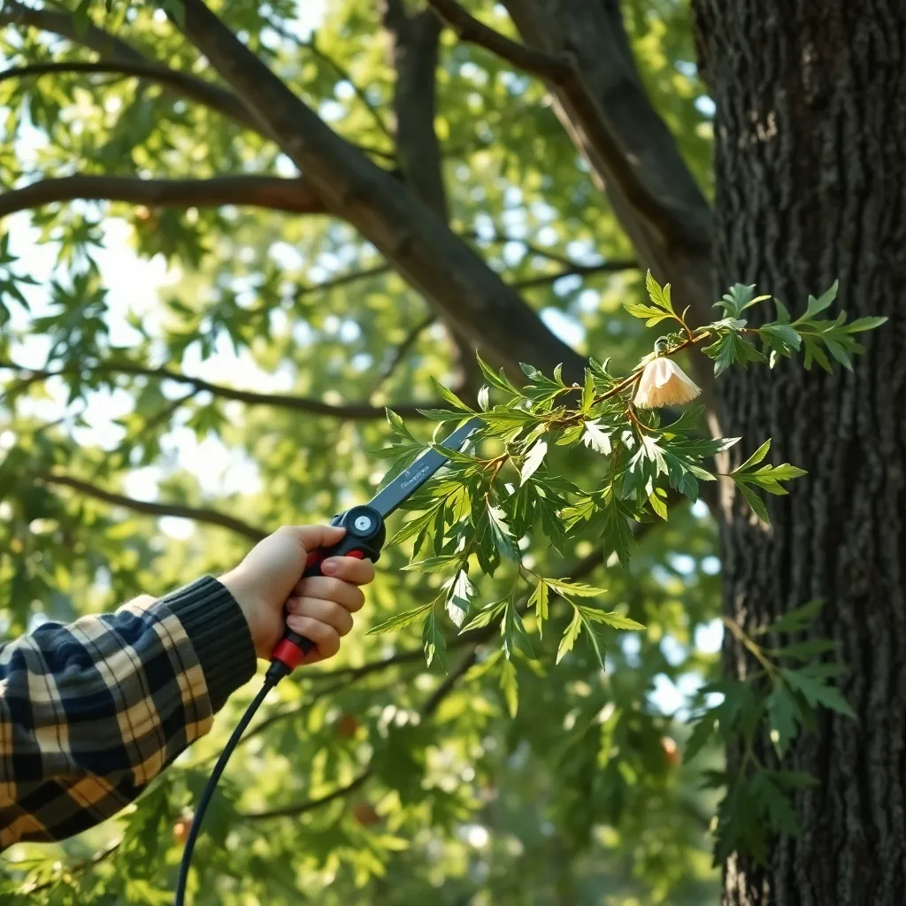
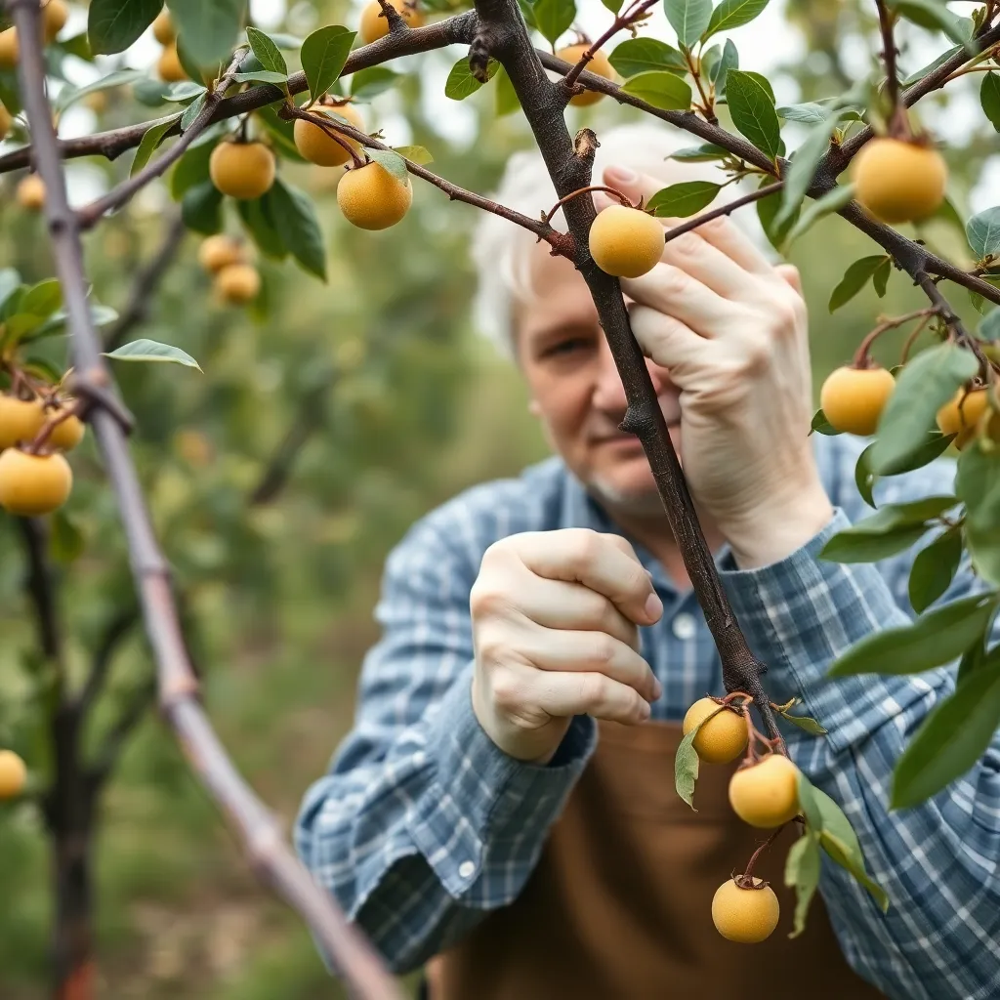
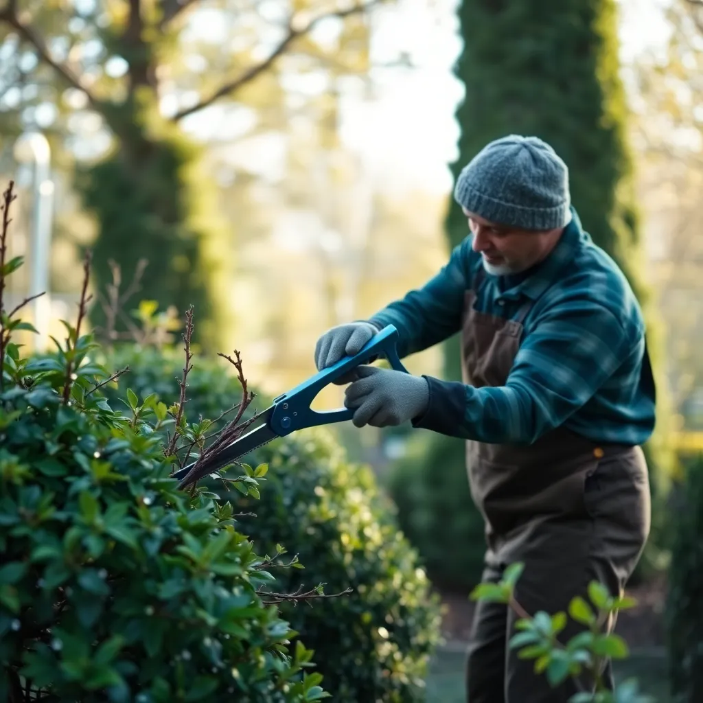
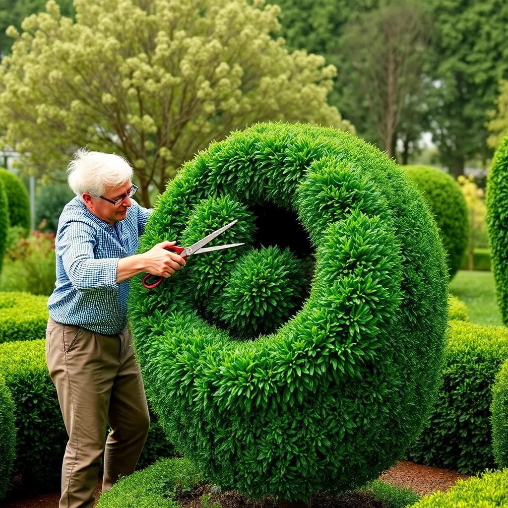

"NestTrim transformed my garden hedges into elegant shapes. Their professionalism and attention to detail are unmatched. Highly recommend their services!"
Crafted cuts. Healthier growth.
NestTrim - Pruning & Shaping Specialists dedicated to sculpting nature with care and precision.
Calm green + cream aesthetics meet refined tools and animated hedge shaping.
Our Pruning & Shaping Services
At NestTrim, we expertly combine horticultural science and artistic craftsmanship to provide an extensive suite of pruning and shaping services. Our goal is to nurture healthier plants, improve landscape aesthetics, and increase the longevity of your trees and shrubs.
We offer a truly personalized experience, tailoring each service to your unique garden environment and desired outcomes. Delve into our detailed service offerings below, each paired with an evocative visual representation of the quality work we provide.
| Visual | Service Description |
|---|---|
Hedge Shaping & SculptingElevate your landscape with our expert hedge shaping service. We emphasize precision, creating elegantly sculpted hedges that serve as living art forms enhancing your outdoor living space’s charm and privacy. Our artisans select suitable plant species and prune with a variety of shears—manual and electric—to achieve smooth, dense shapes. Regular maintenance visits ensure your hedges always retain their correct form, promoting vigorous growth and a healthier structure. This service perfectly blends aesthetic appeal and plant vitality. |
|
|  |
Tree Trimming & PruningOur tree trimming services focus on maintaining tree health and safety. We carefully remove dead or damaged branches and thin dense areas to improve airflow and sunlight penetration. Utilizing best arboriculture practices such as the three-cut method for large limbs, we protect the natural form of the tree while mitigating risks of storm damage and pest infestation. We schedule trimming during optimal growth periods to minimize stress and accelerate recovery, ensuring your trees thrive with structural integrity and aesthetic beauty for years to come. |
|  |
Fruit Tree CareMaximize your fruit harvest with our expert pruning and care for fruit trees. We scientifically evaluate branch density to reduce overcrowding, enhance sun exposure, and improve nutrient distribution. Our thinning and shaping protocols reduce disease likelihood and elevate fruit size, ripeness, and flavor profiles. We also provide seasonal advice on fertilization, watering, and pest control to ensure your orchard or backyard fruit garden attains peak productivity while maintaining long-term tree health and vigor. |
|  |
Seasonal MaintenanceMaintain optimal plant health with our seasonal pruning and care packages. Timed to coincide with natural growth cycles, we remove dead or damaged wood, perform light trimmings, and execute shaping corrections. This cyclical maintenance reduces stress on your plants and prepares them for flourishing growth or dormancy. Tailored per plant species, our protocols promote resilience, reduce disease risks, and enhance your garden’s appearance throughout changing seasons, ensuring year-round vitality. |
|  |
Specialty Topiary ArtImmerse yourself in the creative side of gardening with our specialty topiary sculpting. We craft living sculptures, ranging from classic geometric forms to intricate animal shapes and fanciful spirals. Utilizing precision tools and artistic expertise, we bring your landscape visions to life while ensuring plant health remains paramount. We offer design consultation and regular upkeep, protecting your topiary masterpieces so they remain lush, striking, and healthy season after season. |
About NestTrim
NestTrim was founded on the belief that nature’s beauty can be enhanced with careful craftsmanship. Our team brings years of experience in arboriculture and garden design to each project.
We employ environmentally responsible pruning practices, prioritizing plant health and longevity. Using refined, professional-grade tools and innovative techniques, we bring artistic vision to every hedge and tree we shape.
Our customer-first approach means transparency, clear communication, and consistent satisfaction on every job, large or small.
Customer Feedback
"Excellent tree pruning that improved the health of my old fruit trees. The team were courteous and clean, and the results were outstanding."
"Reliable and skilled hedge shaping specialists. Their calm green and cream themed presentation reflects their calm and precise working method."
"I appreciate how NestTrim’s advice and ongoing support have helped me maintain a beautiful landscape that stands out in my neighborhood."
Pruning & Shaping Tips
Tip 1: Timing Matters
Prune most deciduous trees during late winter or early spring when they are still dormant to avoid stress and disease.
Tip 2: Use the Right Tools
Sharp, clean tools prevent damage and promote faster healing in plants. Regularly sanitize them to reduce disease spread.
Tip 3: Avoid Over-Pruning
Never remove more than 25% of the foliage at once; it weakens the plant and limits the photosynthesis needed for growth.
Tip 4: Shape with Growth Habits
Understand each plant’s natural growth direction and shape; shaping should enhance rather than fight the natural form.
Tip 5: Clean Cuts Heal Faster
Make precise cuts just above a bud or branch node to encourage quick healing and new growth.
Tip 6: Safety First
Wear protective gear and take precautions when using power tools or climbing. Professional help is recommended for large trees.
Disclaimer
NestTrim provides professional pruning and shaping advice based on best practices in arboriculture. However, individual results may vary depending on plant species, climate, and maintenance. We recommend consulting a certified arborist for specific tree health issues or complex pruning needs. This website content is for informational purposes only and does not substitute professional landscaping or medical advice for plant diseases.